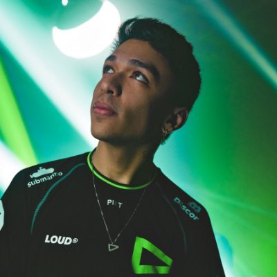

Sobre mim
Bryan "pANcada" Luna
Bryan Luna, 22 anos, conhecido como "pANcada" é um jogador profissional de VALORANT conhecido por atuar na área de controlador. Já jogou VALORANT profissionalmente pelas equipes B4 Esports, Stars Horizon e atualmente atua pela LOUD.
Antes do VALORANT, Pancada era jogador profissional de CROSSFIRE, onde competiu profissionalmente pelas equipes INTZ e BLACK DRAGONS.